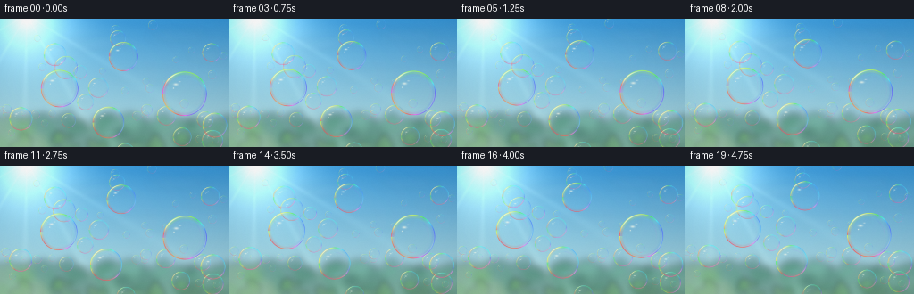
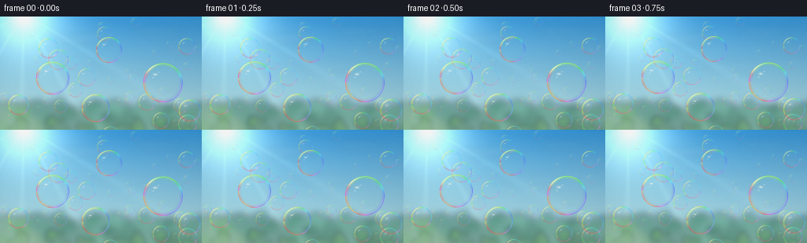
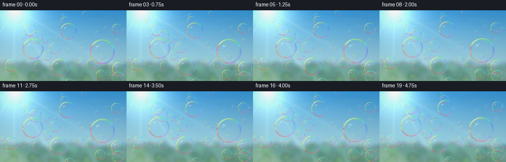
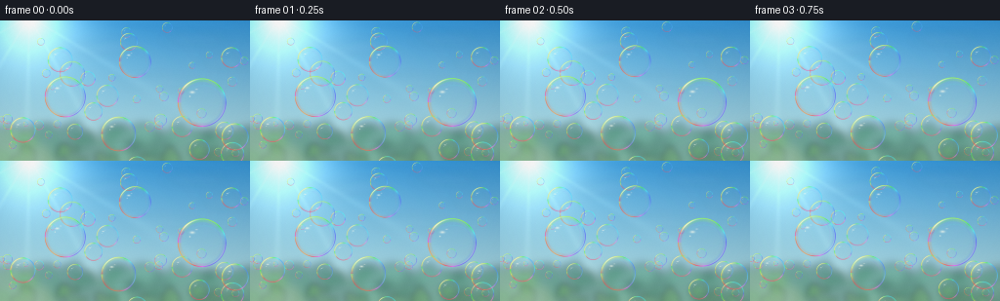

CODING AGENTS AS PIXEL WORLD MODELS
traex/GPT-5.6-Sol · phygen_076
点击播放 · 原生 RGB 像素
逐轮保存的候选
回放视频、检查图与代码变化。
每份候选均可单独播放。实际图片检查记录在下方工具轨迹中。
候选 01播放与检查图
点击播放 · 原生 RGB 像素


展开代码变化
--- 上一保存版本
+++ 本次保存版本
@@ -0,0 +1,261 @@
+from pathlib import Path
+import json
+import math
+import colorsys
+
+import cv2
+import numpy as np
+from PIL import Image, ImageDraw, ImageFilter
+
+import artifact_io
+
+CASE_DIR = Path(__file__).resolve().parent
+SPEC = json.loads((CASE_DIR / "task_spec.json").read_text())
+W, H = int(SPEC["width"]), int(SPEC["height"])
+N, FPS = int(SPEC["frames"]), float(SPEC["fps"])
+S = 4 # supersampling for clean, photographic edges
+WW, HH = W * S, H * S
+RNG = np.random.default_rng(7601)
+
+
+def build_background():
+ """A warm, sun-washed blue sky above a very soft green horizon."""
+ yy, xx = np.mgrid[0:HH, 0:WW].astype(np.float32)
+ yf = yy / max(HH - 1, 1)
+ # Rich blue zenith graduating into pale warm haze near the horizon.
+ top = np.array([48, 145, 213], np.float32)
+ horizon = np.array([189, 224, 222], np.float32)
+ mix = np.clip(yf ** 0.85, 0, 1)[..., None]
+ sky = top * (1 - mix) + horizon * mix
+
+ # Sun just inside upper left; several scales of bloom produce convincing glare.
+ sx, sy = 30 * S, -4 * S
+ dist = np.sqrt((xx - sx) ** 2 + (yy - sy) ** 2) / S
+ glow = (115 * np.exp(-(dist / 48) ** 2) +
+ 65 * np.exp(-(dist / 20) ** 2) +
+ 34 * np.exp(-(dist / 95) ** 2))[..., None]
+ warm = np.array([1.00, 0.91, 0.65], np.float32)[None, None, :]
+ sky = sky + glow * warm
+
+ # Broad diagonal rays, subdued enough not to compete with the bubbles.
+ ray_angle = np.arctan2(yy - sy, xx - sx)
+ ray_pattern = np.clip(np.cos(ray_angle * 12.0 - 0.25), 0, 1) ** 9
+ ray_falloff = np.exp(-dist / 210.0) * (1 - np.exp(-dist / 18.0))
+ sky += (ray_pattern * ray_falloff * 12.0)[..., None] * warm
+ sky = np.uint8(np.clip(sky, 0, 255))
+ bg = Image.fromarray(sky, "RGB")
+
+ # High, translucent cloud veils.
+ cloud = Image.new("RGBA", (WW, HH), (0, 0, 0, 0))
+ cd = ImageDraw.Draw(cloud, "RGBA")
+ for cx, cy, rx, ry, a in [
+ (92, 29, 28, 5, 18), (117, 27, 22, 6, 13),
+ (200, 19, 34, 5, 14), (232, 42, 26, 5, 12),
+ (161, 63, 42, 6, 9),
+ ]:
+ cd.ellipse(((cx-rx)*S, (cy-ry)*S, (cx+rx)*S, (cy+ry)*S),
+ fill=(255, 255, 244, a))
+ cloud = cloud.filter(ImageFilter.GaussianBlur(5*S))
+ bg = Image.alpha_composite(bg.convert("RGBA"), cloud)
+
+ # Defocused, distant sunlit treeline and meadowâcontext without hard clutter.
+ foliage = Image.new("RGBA", (WW, HH), (0, 0, 0, 0))
+ fd = ImageDraw.Draw(foliage, "RGBA")
+ fd.rectangle((0, 124*S, WW, HH), fill=(56, 113, 73, 155))
+ frng = np.random.default_rng(112)
+ for _ in range(125):
+ x = float(frng.uniform(-8, W+8)); y = float(frng.uniform(116, 142))
+ rx = float(frng.uniform(5, 17)); ry = float(frng.uniform(5, 14))
+ if x < 47:
+ col = (86, int(frng.uniform(126, 158)), 75, int(frng.uniform(75, 145)))
+ else:
+ col = (36, int(frng.uniform(91, 129)), 73, int(frng.uniform(85, 155)))
+ fd.ellipse(((x-rx)*S, (y-ry)*S, (x+rx)*S, (y+ry)*S), fill=col)
+ foliage = foliage.filter(ImageFilter.GaussianBlur(4.2*S))
+ bg = Image.alpha_composite(bg, foliage)
+
+ # A warm, out-of-focus foreground at the lowest edge.
+ haze = Image.new("RGBA", (WW, HH), (0, 0, 0, 0))
+ hd = ImageDraw.Draw(haze, "RGBA")
+ for _ in range(45):
+ x = float(frng.uniform(-5, W+5)); y = float(frng.uniform(132, 151))
+ r = float(frng.uniform(2.5, 9))
+ c = (97, int(frng.uniform(136, 178)), 70, int(frng.uniform(35, 90)))
+ hd.ellipse(((x-r)*S, (y-r)*S, (x+r)*S, (y+r)*S), fill=c)
+ haze = haze.filter(ImageFilter.GaussianBlur(3.0*S))
+ bg = Image.alpha_composite(bg, haze)
+
+ arr = np.asarray(bg.convert("RGB"), dtype=np.float32)
+ # Gentle optical vignette, mostly at the far right corners.
+ nx = (xx - WW*.47) / (WW*.74)
+ ny = (yy - HH*.45) / (HH*.90)
+ vig = np.clip(1.0 - 0.095 * (nx*nx + ny*ny), .86, 1.0)[..., None]
+ arr *= vig
+ return np.uint8(np.clip(arr, 0, 255))
+
+
+def make_bubbles():
+ bubbles = []
+ # Hero bubbles anchor the scene and make the soap-film physics readable.
+ anchors = [
+ (206, 84, 25.0), (65, 78, 21.0), (136, 42, 16.5),
+ (120, 116, 18.0), (240, 119, 14.0), (24, 112, 13.0),
+ ]
+ for i, (x, y, r) in enumerate(anchors):
+ bubbles.append(dict(x=x, y=y, r=r,
+ speed=1.35 + .16*i, drift=(-.22 + .09*i),
+ amp=1.7 + .22*(i % 3), freq=.48 + .05*i,
+ phase=.61*i+0.4, film=1.17, depth=1.0))
+
+ # Mid-distance bubbles, spatially distributed with mild overlap allowed.
+ for i in range(13):
+ for _ in range(100):
+ r = float(RNG.uniform(7.0, 13.0))
+ x = float(RNG.uniform(-2+r*.35, W+2-r*.35))
+ y = float(RNG.uniform(10, H+7))
+ if all((x-b['x'])**2 + (y-b['y'])**2 > (0.48*(r+b['r']))**2
+ for b in bubbles):
+ break
+ bubbles.append(dict(x=x, y=y, r=r,
+ speed=float(RNG.uniform(.95, 1.85)), drift=float(RNG.uniform(-.38, .38)),
+ amp=float(RNG.uniform(.7, 2.1)), freq=float(RNG.uniform(.42, .82)),
+ phase=float(RNG.uniform(0, 2*math.pi)), film=float(RNG.uniform(.86, 1.10)),
+ depth=.72))
+
+ # Many tiny distant bubbles catch pinpoints of sunlight.
+ for i in range(28):
+ r = float(RNG.uniform(2.4, 6.4))
+ x = float(RNG.uniform(-2, W+2))
+ y = float(RNG.uniform(5, H+8))
+ bubbles.append(dict(x=x, y=y, r=r,
+ speed=float(RNG.uniform(.55, 1.48)), drift=float(RNG.uniform(-.25, .25)),
+ amp=float(RNG.uniform(.35, 1.35)), freq=float(RNG.uniform(.38, .9)),
+ phase=float(RNG.uniform(0, 2*math.pi)), film=float(RNG.uniform(.66, .91)),
+ depth=.45))
+ return sorted(bubbles, key=lambda b: b['r'])
+
+
+def hsv_rgb_array(h, s, v):
+ """Vectorized HSV conversion, all channels in [0,1]."""
+ h = np.mod(h, 1.0)
+ i = np.floor(h * 6).astype(np.int32)
+ f = h * 6 - i
+ p = v * (1-s); q = v * (1-f*s); t = v * (1-(1-f)*s)
+ out = np.zeros(h.shape + (3,), np.float32)
+ choices = [(v,t,p), (q,v,p), (p,v,t), (p,q,v), (t,p,v), (v,p,q)]
+ for k, vals in enumerate(choices):
+ m = (i % 6 == k)
+ for c in range(3): out[..., c][m] = vals[c][m]
+ return out
+
+
+def angle_delta(a, b):
+ return np.arctan2(np.sin(a-b), np.cos(a-b))
+
+
+def render_bubble(frame, cx, cy, radius, phase, film_strength, depth):
+ """Composite one thin-film sphere, including weak refraction of its background."""
+ cx *= S; cy *= S; radius *= S
+ pad = 2.2 * S
+ x0 = max(0, int(math.floor(cx-radius-pad))); x1 = min(WW, int(math.ceil(cx+radius+pad))+1)
+ y0 = max(0, int(math.floor(cy-radius-pad))); y1 = min(HH, int(math.ceil(cy+radius+pad))+1)
+ if x0 >= x1 or y0 >= y1: return
+
+ gy, gx = np.mgrid[y0:y1, x0:x1].astype(np.float32)
+ dx = (gx-cx)/radius; dy = (gy-cy)/radius
+ rho = np.sqrt(dx*dx + dy*dy)
+ theta = np.arctan2(dy, dx)
+ inside = rho <= 1.0
+ patch = frame[y0:y1, x0:x1].copy()
+
+ # A transparent curved film subtly magnifies and displaces what lies behind it.
+ displacement = .075 * np.clip(1-rho*rho, 0, 1) * (0.65 + .35*depth)
+ mapx = (cx + (gx-cx)*(1-displacement)).astype(np.float32)
+ mapy = (cy + (gy-cy)*(1-displacement) - radius*.016*np.clip(1-rho,0,1)).astype(np.float32)
+ refr = cv2.remap(frame, mapx, mapy, interpolation=cv2.INTER_LINEAR,
+ borderMode=cv2.BORDER_REFLECT_101).astype(np.float32)
+ base = patch.astype(np.float32)
+ glass_alpha = (.022 + .045*depth) * np.clip(1-rho*rho, 0, 1)
+ glass_alpha *= inside
+ # Faint cool spherical body in the skylight.
+ cool = refr * .965 + np.array([8, 15, 18], np.float32)
+ a = glass_alpha[..., None]
+ base = base*(1-a) + cool*a
+
+ # Thin-film interference: colored edge changes around the circumference.
+ hue = np.mod(.53 + theta/(2*math.pi)*1.22 + .10*np.sin(3*theta+phase) + phase*.025, 1.0)
+ sat = np.full_like(hue, .73)
+ val = np.full_like(hue, 1.0)
+ rainbow = hsv_rgb_array(hue, sat, val) * 255.0
+ outer = np.exp(-((rho-.972)/.018)**2)
+ inner = np.exp(-((rho-.902)/.052)**2)
+ angular = .52 + .48*(.5+.5*np.cos(theta+2.30))
+ rim_a = np.clip((outer*.76 + inner*.19*angular) * film_strength * (.65+.35*depth), 0, .86)
+ rim_a *= (rho <= 1.025)
+ base = base*(1-rim_a[...,None]) + rainbow*rim_a[...,None]
+
+ # Pearl-white outer glint on the sunward side and a weaker opposing glint.
+ sun_arc = np.exp(-(angle_delta(theta, -2.24)/.49)**2) * np.exp(-((rho-.955)/.026)**2)
+ bounce_arc = np.exp(-(angle_delta(theta, .69)/.68)**2) * np.exp(-((rho-.958)/.032)**2)
+ white_a = np.clip((sun_arc*.88 + bounce_arc*.28) * (.70+.30*depth), 0, .92)
+ white = np.array([255, 252, 225], np.float32)
+ base = base*(1-white_a[...,None]) + white*white_a[...,None]
+
+ # Iridescent, wandering secondary streaks in the very thin membrane.
+ band_center = .74 + .055*np.sin(theta*2.1 + phase*1.7)
+ band = np.exp(-((rho-band_center)/.025)**2)
+ band *= np.exp(-(angle_delta(theta, -1.28)/1.32)**2)
+ band_a = band * .075 * film_strength * inside
+ band_col = hsv_rgb_array(np.mod(hue+.22,1), np.full_like(hue,.66), np.ones_like(hue))*255
+ base = base*(1-band_a[...,None]) + band_col*band_a[...,None]
+
+ # Two elongated sun reflections and one pinpoint highlight.
+ spot1 = np.exp(-(((dx+.39)/.135)**2 + ((dy+.42)/.070)**2)*2.0)
+ spot2 = np.exp(-(((dx+.22)/.070)**2 + ((dy+.54)/.032)**2)*2.0)
+ pinpoint = np.exp(-(((dx+.49)/.036)**2 + ((dy+.25)/.036)**2)*2.0)
+ spot_a = np.clip((spot1*.66 + spot2*.46 + pinpoint*.78) * inside * (.72+.28*depth), 0, .88)
+ spot_col = np.array([255, 255, 237], np.float32)
+ base = base*(1-spot_a[...,None]) + spot_col*spot_a[...,None]
+
+ # Delicate lower interior caustic gives the sphere volume, not an opaque fill.
+ caustic = np.exp(-(((dx-.18)/.54)**2 + ((dy-.61)/.13)**2)*2.0) * inside
+ ca = caustic * .055 * depth
+ ca_col = np.array([119, 216, 246], np.float32)
+ base = base*(1-ca[...,None]) + ca_col*ca[...,None]
+
+ # Keep all effects constrained and feathered just outside the geometric sphere.
+ feather = np.clip((1.035-rho)/.035, 0, 1)[...,None]
+ result = patch.astype(np.float32)*(1-feather) + base*feather
+ frame[y0:y1, x0:x1] = np.uint8(np.clip(result, 0, 255))
+
+
+def generate_frames():
+ background = build_background()
+ bubbles = make_bubbles()
+ frames = []
+ for fi in range(N):
+ t = fi / FPS
+ frame = background.copy()
+ for j, b in enumerate(bubbles):
+ # Buoyancy dominates, with a slow sinusoidal breeze and tiny vertical bob.
+ cx = b['x'] + b['drift']*t + b['amp']*math.sin(b['phase'] + b['freq']*t)
+ cy = b['y'] - b['speed']*t + .22*b['amp']*math.sin(b['phase']*.7 + .57*t)
+ wobble = 1.0 + .0055*math.sin(b['phase']*1.9 + 1.13*t)
+ shimmer = b['phase'] + .37*t + .02*j
+ render_bubble(frame, cx, cy, b['r']*wobble, shimmer, b['film'], b['depth'])
+
+ # Downsample once after all compositing for naturally soft antialiasing.
+ small = cv2.resize(frame, (W, H), interpolation=cv2.INTER_AREA)
+ # Very subtle static sensor grain prevents sterile gradients without temporal noise.
+ grain_rng = np.random.default_rng(9200 + fi)
+ grain = grain_rng.normal(0, .42, small.shape[:2])[...,None]
+ small = np.uint8(np.clip(small.astype(np.float32)+grain, 0, 255))
+ frames.append(small)
+ return np.stack(frames).astype(np.uint8)
+
+
+if __name__ == "__main__":
+ frames = generate_frames()
+ assert frames.shape == (N, H, W, 3) and frames.dtype == np.uint8
+ artifact_io.save(frames, CASE_DIR)
+ print(f"saved {N} RGB frames at {W}x{H}, {FPS:g} fps")
候选 02播放与检查图
点击播放 · 原生 RGB 像素


展开代码变化
--- 上一保存版本
+++ 本次保存版本
@@ -187,8 +187,13 @@
sat = np.full_like(hue, .73)
val = np.full_like(hue, 1.0)
rainbow = hsv_rgb_array(hue, sat, val) * 255.0
- outer = np.exp(-((rho-.972)/.018)**2)
- inner = np.exp(-((rho-.902)/.052)**2)
+ # At long range a physically thin edge still covers part of a camera pixel;
+ # broaden it just enough that the smallest bubbles remain legible after resize.
+ radius_screen = radius / S
+ edge_sigma = max(.018, .32 / radius_screen)
+ inner_sigma = max(.052, .38 / radius_screen)
+ outer = np.exp(-((rho-.972)/edge_sigma)**2)
+ inner = np.exp(-((rho-.902)/inner_sigma)**2)
angular = .52 + .48*(.5+.5*np.cos(theta+2.30))
rim_a = np.clip((outer*.76 + inner*.19*angular) * film_strength * (.65+.35*depth), 0, .86)
rim_a *= (rho <= 1.025)
@@ -247,7 +252,7 @@
# Downsample once after all compositing for naturally soft antialiasing.
small = cv2.resize(frame, (W, H), interpolation=cv2.INTER_AREA)
# Very subtle static sensor grain prevents sterile gradients without temporal noise.
- grain_rng = np.random.default_rng(9200 + fi)
+ grain_rng = np.random.default_rng(9200)
grain = grain_rng.normal(0, .42, small.shape[:2])[...,None]
small = np.uint8(np.clip(small.astype(np.float32)+grain, 0, 255))
frames.append(small)
可观测工具轨迹
实际执行的命令与返回图片。
命令 1exit 0
/bin/bash -lc "cat GENERATION_RULES.md && printf '\\n--- prompt.txt ---\\n' && cat prompt.txt"
命令 2exit 0
/bin/bash -lc "cat task_spec.json && printf '\\n--- files ---\\n' && find . -maxdepth 2 -type f -printf '%p\\n' | sort"
命令 3exit 0
/bin/bash -lc "command -v ffmpeg; command -v python3; python3 - <<'PY' mods=['PIL','numpy','cv2','cairo','matplotlib','scipy'] for m in mods: try: x=__import__(m); print(m,'OK',getattr(x,'__version__','')) except Exception as e: print(m,'NO',e) PY"
命令 4exit 0
/bin/bash -lc "sed -n '1,260p' artifact_io.py"
命令 5exit 0
/bin/bash -lc "cat > generate.py <<'PY'
from pathlib import Path
import json
import math
import colorsys
import cv2
import numpy as np
from PIL import Image, ImageDraw, ImageFilter
import artifact_io
CASE_DIR = Path(__file__).resolve().parent
SPEC = json.loads((CASE_DIR / \"task_spec.json\").read_text())
W, H = int(SPEC[\"width\"]), int(SPEC[\"height\"])
N, FPS = int(SPEC[\"frames\"]), float(SPEC[\"fps\"])
S = 4 # supersampling for clean, photographic edges
WW, HH = W * S, H * S
RNG = np.random.default_rng(7601)
def build_background():
\"\"\"A warm, sun-washed blue sky above a very soft green horizon.\"\"\"
yy, xx = np.mgrid[0:HH, 0:WW].astype(np.float32)
yf = yy / max(HH - 1, 1)
# Rich blue zenith graduating into pale warm haze near the horizon.
top = np.array([48, 145, 213], np.float32)
horizon = np.array([189, 224, 222], np.float32)
mix = np.clip(yf ** 0.85, 0, 1)[..., None]
sky = top * (1 - mix) + horizon * mix
# Sun just inside upper left; several scales of bloom produce convincing glare.
sx, sy = 30 * S, -4 * S
dist = np.sqrt((xx - sx) ** 2 + (yy - sy) ** 2) / S
glow = (115 * np.exp(-(dist / 48) ** 2) +
65 * np.exp(-(dist / 20) ** 2) +
34 * np.exp(-(dist / 95) ** 2))[..., None]
warm = np.array([1.00, 0.91, 0.65], np.float32)[None, None, :]
sky = sky + glow * warm
# Broad diagonal rays, subdued enough not to compete with the bubbles.
ray_angle = np.arctan2(yy - sy, xx - sx)
ray_pattern = np.clip(np.cos(ray_angle * 12.0 - 0.25), 0, 1) ** 9
ray_falloff = np.exp(-dist / 210.0) * (1 - np.exp(-dist / 18.0))
sky += (ray_pattern * ray_falloff * 12.0)[..., None] * warm
sky = np.uint8(np.clip(sky, 0, 255))
bg = Image.fromarray(sky, \"RGB\")
# High, translucent cloud veils.
cloud = Image.new(\"RGBA\", (WW, HH), (0, 0, 0, 0))
cd = ImageDraw.Draw(cloud, \"RGBA\")
for cx, cy, rx, ry, a in [
(92, 29, 28, 5, 18), (117, 27, 22, 6, 13),
(200, 19, 34, 5, 14), (232, 42, 26, 5, 12),
(161, 63, 42, 6, 9),
]:
cd.ellipse(((cx-rx)*S, (cy-ry)*S, (cx+rx)*S, (cy+ry)*S),
fill=(255, 255, 244, a))
cloud = cloud.filter(ImageFilter.GaussianBlur(5*S))
bg = Image.alpha_composite(bg.convert(\"RGBA\"), cloud)
# Defocused, distant sunlit treeline and meadowâcontext without hard clutter.
foliage = Image.new(\"RGBA\", (WW, HH), (0, 0, 0, 0))
fd = ImageDraw.Draw(foliage, \"RGBA\")
fd.rectangle((0, 124*S, WW, HH), fill=(56, 113, 73, 155))
frng = np.random.default_rng(112)
for _ in range(125):
x = float(frng.uniform(-8, W+8)); y = float(frng.uniform(116, 142))
rx = float(frng.uniform(5, 17)); ry = float(frng.uniform(5, 14))
if x < 47:
col = (86, int(frng.uniform(126, 158)), 75, int(frng.uniform(75, 145)))
else:
col = (36, int(frng.uniform(91, 129)), 73, int(frng.uniform(85, 155)))
fd.ellipse(((x-rx)*S, (y-ry)*S, (x+rx)*S, (y+ry)*S), fill=col)
foliage = foliage.filter(ImageFilter.GaussianBlur(4.2*S))
bg = Image.alpha_composite(bg, foliage)
# A warm, out-of-focus foreground at the lowest edge.
haze = Image.new(\"RGBA\", (WW, HH), (0, 0, 0, 0))
hd = ImageDraw.Draw(haze, \"RGBA\")
for _ in range(45):
x = float(frng.uniform(-5, W+5)); y = float(frng.uniform(132, 151))
r = float(frng.uniform(2.5, 9))
c = (97, int(frng.uniform(136, 178)), 70, int(frng.uniform(35, 90)))
hd.ellipse(((x-r)*S, (y-r)*S, (x+r)*S, (y+r)*S), fill=c)
haze = haze.filter(ImageFilter.GaussianBlur(3.0*S))
bg = Image.alpha_composite(bg, haze)
arr = np.asarray(bg.convert(\"RGB\"), dtype=np.float32)
# Gentle optical vignette, mostly at the far right corners.
nx = (xx - WW*.47) / (WW*.74)
ny = (yy - HH*.45) / (HH*.90)
vig = np.clip(1.0 - 0.095 * (nx*nx + ny*ny), .86, 1.0)[..., None]
arr *= vig
return np.uint8(np.clip(arr, 0, 255))
def make_bubbles():
bubbles = []
# Hero bubbles anchor the scene and make the soap-film physics readable.
anchors = [
(206, 84, 25.0), (65, 78, 21.0), (136, 42, 16.5),
(120, 116, 18.0), (240, 119, 14.0), (24, 112, 13.0),
]
for i, (x, y, r) in enumerate(anchors):
bubbles.append(dict(x=x, y=y, r=r,
speed=1.35 + .16*i, drift=(-.22 + .09*i),
amp=1.7 + .22*(i % 3), freq=.48 + .05*i,
phase=.61*i+0.4, film=1.17, depth=1.0))
# Mid-distance bubbles, spatially distributed with mild overlap allowed.
for i in range(13):
for _ in range(100):
r = float(RNG.uniform(7.0, 13.0))
x = float(RNG.uniform(-2+r*.35, W+2-r*.35))
y = float(RNG.uniform(10, H+7))
if all((x-b['x'])**2 + (y-b['y'])**2 > (0.48*(r+b['r']))**2
for b in bubbles):
break
bubbles.append(dict(x=x, y=y, r=r,
speed=float(RNG.uniform(.95, 1.85)), drift=float(RNG.uniform(-.38, .38)),
amp=float(RNG.uniform(.7, 2.1)), freq=float(RNG.uniform(.42, .82)),
phase=float(RNG.uniform(0, 2*math.pi)), film=float(RNG.uniform(.86, 1.10)),
depth=.72))
# Many tiny distant bubbles catch pinpoints of sunlight.
for i in range(28):
r = float(RNG.uniform(2.4, 6.4))
x = float(RNG.uniform(-2, W+2))
y = float(RNG.uniform(5, H+8))
bubbles.append(dict(x=x, y=y, r=r,
speed=float(RNG.uniform(.55, 1.48)), drift=float(RNG.uniform(-.25, .25)),
amp=float(RNG.uniform(.35, 1.35)), freq=float(RNG.uniform(.38, .9)),
phase=float(RNG.uniform(0, 2*math.pi)), film=float(RNG.uniform(.66, .91)),
depth=.45))
return sorted(bubbles, key=lambda b: b['r'])
def hsv_rgb_array(h, s, v):
\"\"\"Vectorized HSV conversion, all channels in [0,1].\"\"\"
h = np.mod(h, 1.0)
i = np.floor(h * 6).astype(np.int32)
f = h * 6 - i
p = v * (1-s); q = v * (1-f*s); t = v * (1-(1-f)*s)
out = np.zeros(h.shape + (3,), np.float32)
choices = [(v,t,p), (q,v,p), (p,v,t), (p,q,v), (t,p,v), (v,p,q)]
for k, vals in enumerate(choices):
m = (i % 6 == k)
for c in range(3): out[..., c][m] = vals[c][m]
return out
def angle_delta(a, b):
return np.arctan2(np.sin(a-b), np.cos(a-b))
def render_bubble(frame, cx, cy, radius, phase, film_strength, depth):
\"\"\"Composite one thin-film sphere, including weak refraction of its background.\"\"\"
cx *= S; cy *= S; radius *= S
pad = 2.2 * S
x0 = max(0, int(math.floor(cx-radius-pad))); x1 = min(WW, int(math.ceil(cx+radius+pad))+1)
y0 = max(0, int(math.floor(cy-radius-pad))); y1 = min(HH, int(math.ceil(cy+radius+pad))+1)
if x0 >= x1 or y0 >= y1: return
gy, gx = np.mgrid[y0:y1, x0:x1].astype(np.float32)
dx = (gx-cx)/radius; dy = (gy-cy)/radius
rho = np.sqrt(dx*dx + dy*dy)
theta = np.arctan2(dy, dx)
inside = rho <= 1.0
patch = frame[y0:y1, x0:x1].copy()
# A transparent curved film subtly magnifies and displaces what lies behind it.
displacement = .075 * np.clip(1-rho*rho, 0, 1) * (0.65 + .35*depth)
mapx = (cx + (gx-cx)*(1-displacement)).astype(np.float32)
mapy = (cy + (gy-cy)*(1-displacement) - radius*.016*np.clip(1-rho,0,1)).astype(np.float32)
refr = cv2.remap(frame, mapx, mapy, interpolation=cv2.INTER_LINEAR,
borderMode=cv2.BORDER_REFLECT_101).astype(np.float32)
base = patch.astype(np.float32)
glass_alpha = (.022 + .045*depth) * np.clip(1-rho*rho, 0, 1)
glass_alpha *= inside
# Faint cool spherical body in the skylight.
cool = refr * .965 + np.array([8, 15, 18], np.float32)
a = glass_alpha[..., None]
base = base*(1-a) + cool*a
# Thin-film interference: colored edge changes around the circumference.
hue = np.mod(.53 + theta/(2*math.pi)*1.22 + .10*np.sin(3*theta+phase) + phase*.025, 1.0)
sat = np.full_like(hue, .73)
val = np.full_like(hue, 1.0)
rainbow = hsv_rgb_array(hue, sat, val) * 255.0
outer = np.exp(-((rho-.972)/.018)**2)
inner = np.exp(-((rho-.902)/.052)**2)
angular = .52 + .48*(.5+.5*np.cos(theta+2.30))
rim_a = np.clip((outer*.76 + inner*.19*angular) * film_strength * (.65+.35*depth), 0, .86)
rim_a *= (rho <= 1.025)
base = base*(1-rim_a[...,None]) + rainbow*rim_a[...,None]
# Pearl-white outer glint on the sunward side and a weaker opposing glint.
sun_arc = np.exp(-(angle_delta(theta, -2.24)/.49)**2) * np.exp(-((rho-.955)/.026)**2)
bounce_arc = np.exp(-(angle_delta(theta, .69)/.68)**2) * np.exp(-((rho-.958)/.032)**2)
white_a = np.clip((sun_arc*.88 + bounce_arc*.28) * (.70+.30*depth), 0, .92)
white = np.array([255, 252, 225], np.float32)
base = base*(1-white_a[...,None]) + white*white_a[...,None]
# Iridescent, wandering secondary streaks in the very thin membrane.
band_center = .74 + .055*np.sin(theta*2.1 + phase*1.7)
band = np.exp(-((rho-band_center)/.025)**2)
band *= np.exp(-(angle_delta(theta, -1.28)/1.32)**2)
band_a = band * .075 * film_strength * inside
band_col = hsv_rgb_array(np.mod(hue+.22,1), np.full_like(hue,.66), np.ones_like(hue))*255
base = base*(1-band_a[...,None]) + band_col*band_a[...,None]
# Two elongated sun reflections and one pinpoint highlight.
spot1 = np.exp(-(((dx+.39)/.135)**2 + ((dy+.42)/.070)**2)*2.0)
spot2 = np.exp(-(((dx+.22)/.070)**2 + ((dy+.54)/.032)**2)*2.0)
pinpoint = np.exp(-(((dx+.49)/.036)**2 + ((dy+.25)/.036)**2)*2.0)
spot_a = np.clip((spot1*.66 + spot2*.46 + pinpoint*.78) * inside * (.72+.28*depth), 0, .88)
spot_col = np.array([255, 255, 237], np.float32)
base = base*(1-spot_a[...,None]) + spot_col*spot_a[...,None]
# Delicate lower interior caustic gives the sphere volume, not an opaque fill.
caustic = np.exp(-(((dx-.18)/.54)**2 + ((dy-.61)/.13)**2)*2.0) * inside
ca = caustic * .055 * depth
ca_col = np.array([119, 216, 246], np.float32)
base = base*(1-ca[...,None]) + ca_col*ca[...,None]
# Keep all effects constrained and feathered just outside the geometric sphere.
feather = np.clip((1.035-rho)/.035, 0, 1)[...,None]
result = patch.astype(np.float32)*(1-feather) + base*feather
frame[y0:y1, x0:x1] = np.uint8(np.clip(result, 0, 255))
def generate_frames():
background = build_background()
bubbles = make_bubbles()
frames = []
for fi in range(N):
t = fi / FPS
frame = background.copy()
for j, b in enumerate(bubbles):
# Buoyancy dominates, with a slow sinusoidal breeze and tiny vertical bob.
cx = b['x'] + b['drift']*t + b['amp']*math.sin(b['phase'] + b['freq']*t)
cy = b['y'] - b['speed']*t + .22*b['amp']*math.sin(b['phase']*.7 + .57*t)
wobble = 1.0 + .0055*math.sin(b['phase']*1.9 + 1.13*t)
shimmer = b['phase'] + .37*t + .02*j
render_bubble(frame, cx, cy, b['r']*wobble, shimmer, b['film'], b['depth'])
# Downsample once after all compositing for naturally soft antialiasing.
small = cv2.resize(frame, (W, H), interpolation=cv2.INTER_AREA)
# Very subtle static sensor grain prevents sterile gradients without temporal noise.
grain_rng = np.random.default_rng(9200 + fi)
grain = grain_rng.normal(0, .42, small.shape[:2])[...,None]
small = np.uint8(np.clip(small.astype(np.float32)+grain, 0, 255))
frames.append(small)
return np.stack(frames).astype(np.uint8)
if __name__ == \"__main__\":
frames = generate_frames()
assert frames.shape == (N, H, W, 3) and frames.dtype == np.uint8
artifact_io.save(frames, CASE_DIR)
print(f\"saved {N} RGB frames at {W}x{H}, {FPS:g} fps\")
PY
python3 generate.py
ls -lh pixels.npz inspection.png transition_check.png index.html frames/00.png frames/19.png"命令 6exit 0
/bin/bash -lc 'python3 -m py_compile generate.py artifact_io.py'
命令 7exit 0
/bin/bash -lc "python3 generate.py && python3 - <<'PY'
from pathlib import Path
import json, numpy as np
from PIL import Image
p=Path('.')
s=json.loads((p/'task_spec.json').read_text())
z=np.load(p/'pixels.npz')['pixels']
ims=[np.asarray(Image.open(p/'frames'/f'{i:02d}.png').convert('RGB')) for i in range(s['frames'])]
a=np.stack(ims)
print('frames',a.shape,a.dtype,'range',int(a.min()),int(a.max()))
print('npz',z.shape,z.dtype)
print('mean RGB',np.round(a.mean(axis=(0,1,2)),2).tolist())
d=np.abs(np.diff(a.astype(np.int16),axis=0))
print('motion mean/max',round(float(d.mean()),3),int(d.max()),'changing px',round(float(np.mean(np.any(d>1,axis=3))),3))
assert a.shape==(20,144,256,3) and a.dtype==np.uint8
assert z.shape==(144,256,20)
assert all((p/x).exists() for x in ['index.html','inspection.png','transition_check.png','pixels.npz'])
PY"保存候选 2 份；完成命令 7 次；可验证图片返回 0 张。原始 API 响应与完整日志保留在本地。